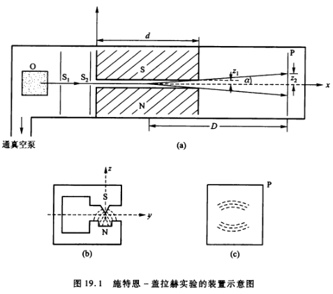
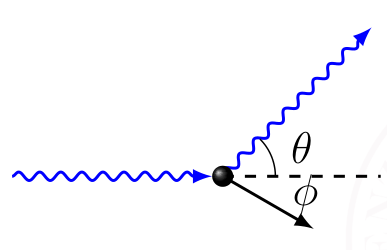
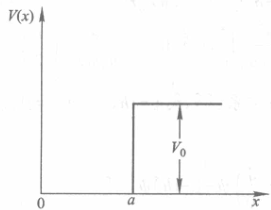

原子物理整理*
啃下大杂烩
31日考试 L1-311
代换查
\begin{gather*} \lambda=\frac{h}{p}, \hbar=\frac{h}{2\pi}, \end{gather*}1. 关键整理
考试无公式
1.1. 重点公式
| Comlomb 散射 | 瞄准角度与散射角 | \(b=\frac{a}{2}\cot \frac{\theta}{2},a=\frac{1}{4\pi\epsilon_0}\frac{Z_1Z_2e^2}{E_k}\) |
| Rutherford 散射 | 散射角大于 θ 粒子数占比 | \(\frac{\Delta N}{N}=nt\pi b^2,b=\frac{a}{2}\cot \frac{\theta}{2}\) |
| 角度对应的微分散射截面 | \(\frac{\mathrm{d}\sigma}{\mathrm{d}\Omega }=\frac{a^2}{16\sin^4 \frac{\theta}{2}}\) | |
| Rydberg 里德伯公式 | \(\nu=\frac{1}{\lambda}=R_H \left[ \frac{1}{n^2}-\frac{1}{n'^2} \right]\) | |
| 不确定关系 | \(\Delta x\Delta p\geq h,\Delta t\Delta E\geq h\) | |
| \(L=\sqrt{l(l+1)}\hbar;S=\sqrt{s(s+1)}\hbar;J=\sqrt{j(j+1)}\hbar\) | ||
| 康普顿散射 | 出射与入射光波长 | \(\lambda'-\lambda=\frac{h}{m_{e}c^2}(1-\cos \theta)\) |
| 散射光子能量 | \(h\nu=\frac{h\nu}{1+r(1-\cos\theta)},r=\frac{h\nu}{m c^2}\) | |
| 反冲电子能量 | \(E=h\nu-h\nu\) |
1.2. 波函数薛定谔模型
薛定谔方程
\begin{gather*} \left[ -\frac{\hbar}{2m}\nabla^2+V \right]\psi=\mathrm{i}\hbar \frac{\partial \psi}{\partial t} \\ \left[ -\frac{\hbar}{2m}\nabla^2+V \right]\psi=E \psi \end{gather*}下面是定态方程，E 是能量（本征值）， 概率为 归一化条件：
\begin{gather*} \int_{-\infty}^{\infty}\psi^*\psi \mathrm{d}x=1 \end{gather*}1.2.1. 无限位能井
1.2.2. 有限位能井
1.2.3. 隧道传
1.3. 自旋
Lamour 进动 量子表示
三个实验推出有自旋
- S-G: Ag 在磁场有两个偏转（一个外层电子本应只有一个）
- 精细结构光谱：
- 反常 Zeeman 塞曼：
耦合？
s-1,p-3,d-5
\begin{gather*} \mu..=-\frac{e}{} F=\vec{\mu} \frac{\mathrm{d}B_z}{\mathrm{d}z } \end{gather*}BV1s14y127nq
1.4. 多电子
1.4.1. SG 实验

1.4.2. 自旋角动量
1.4.3. 认电子状态
左上角： 2s+1
左下角：原子序数
右下角：
| 2s+1 | |
| 原子序数 | s |
| S | ||
| P | l=1 | \(j=\frac{1}{2},\frac{3}{2}\) |
- 两个电子： j-j,l-s
1.5. 多电子
1.5.1. Compton 散射
光打电子波长变

结论：
\begin{gather*} \begin{cases} \left( \frac{h}{\lambda} \right)^2+\left( \frac{h}{\lambda'} \right)^2-2 \frac{h^2}{\lambda\lambda'} \cos\theta=p\\ h\nu+m_{e}c^2=h\nu'+\sqrt{(pc)^2+(mc^2)^2} \end{cases}\rightarrow \boxed{\lambda'-\lambda=\frac{h}{m_{e}c^2}(1-\cos \theta)} \end{gather*}写法：余弦定理＋能量守恒（需要相对能总能量）
- 最大：原路返回 \(\theta=\pi\) \(\Delta\lambda=\frac{2h}{mc^2}\)
- 最小
想知道能量变化关系
\begin{gather*} h\nu'-h\nu=h\frac{c}{\lambda'}-h \frac{c}{\lambda} \end{gather*}- 相干散射——弹性散射：能量不损失 外层
- 非相干——损失能量 内层电子
逆 Compton :电子打光子
应用：测电子动量
其它：Frank hertz
1.6. X 射线吸收
只考概念
布拉格方程得到晶格常数 特征谱（XRF）
导带价带
一般测半导体（导体无，绝缘体太宽）
2. 作业及提高
2.1. comloub rutherford 代入
2.1.1. 1-2
1-2
(1) 动能为 5.00 MeV 的 \(\alpha\) 粒子被金核以 90°散射时，它的瞄准距离（碰撞参数）为多大？
(2) 如果金箔厚为 1.0 $μ$m，则入射 \(\alpha\) 粒子束以大于 90°散射（称为背散射）的粒子数是全部入射粒子的百分之几？
解答:
(1) 由式(3-1)、(3-2)知碰撞参数 \(b\) 与散射角 \(\theta\) 的关系式为
\begin{gather*} b = \frac{a}{2} \cot \frac{\theta}{2} \quad \text{(式中 } a = \frac{Z_1 Z_2 e^2}{4 \pi \epsilon_0 E_k} \text{)} \end{gather*}库仑散射因子为
\begin{gather*} \frac{d\sigma}{d\Omega} = \frac{a^2}{4\sin^4\left(\frac{\theta}{2}\right)} \end{gather*}其中，\(Z_1\) 和 \(Z_2\) 分别是 \(\alpha\) 粒子和金核的原子序数，\(e\) 是电子电荷，\(\epsilon_0\) 是真空介电常数，\(E_k\) 是 \(\alpha\) 粒子
\begin{gather*} a = \frac{e^2 Z_1 Z_2}{4 \pi \epsilon_0 E_k} = \frac{1.44 \, \text{fm} \cdot \text{MeV} \times 2 \times 79}{5 \, \text{MeV}} = 45.5 \, \text{fm} \end{gather*}- 计算瞄准距离 $b$：
方法二:
根据碰撞参数 \(b\) 与散射角 \(\theta\) 的关系式 \[ b = \frac{a}{2} \cot \frac{\theta}{2} \] 可知当 \(\theta \geq 90^\circ\) 时，\(b(\theta) \leq b(90^\circ)\)，即对于每一个靶核，散射角大于 \(90^\circ\) 的入射粒子位于 \(b < b(90^\circ)\) 的圆盘截面内，该截面面积为 \[ \sigma_c = \pi b^2(90^\circ) \] 则 \(\alpha\) 粒子束以大于 \(90^\circ\) 散射的粒子数为 \[ N' = N t \pi b^2 \] 大于 \(90^\circ\) 散射的粒子数与全部入射粒子的比为 \[ \frac{N'}{N} = \frac{N t \pi b^2}{M t \pi b^2} = \frac{N}{M} \]
2.2. 光电、Bohr 、光谱
2-1
铯的逸出功为 1.9 eV,试求:
(1) 铯的光电效应阈频率及阈值波长;
(2) 如果要得到能量为 1.5 eV 的光电子,必须使用多少波长的光照射?
根据式(6-9) 爱因斯坦的光电效应方程 \[ \frac{1}{2} m v_m^2 = h \nu - \phi \] 式中, \(\frac{1}{2} m v_m^2\) 为出射电子的最大动能, \(h \nu\) 为入射光子能量, \(\phi\) 为金属的逸出功.
(1) 铯的逸出功 \(\phi = 1.9 \text{ eV}\), 当出射电子的最大动能为 0 时, 入射光子的频率最小, 对应于金属的光电效应阈频率, 即 \[ h \nu_0 = \phi \] 故阈频率为 \[ \nu_0 = \frac{\phi}{h} = \frac{1.9 \text{ eV} \times 3.0 \times 10^8 \text{ m/s}}{1.24 \text{ nm} \cdot \text{keV}} = 4.6 \times 10^{14} \text{ Hz} \] 阈值波长的值为 \[ \lambda_0 = \frac{c}{\nu_0} = \frac{3.0 \times 10^8 \text{ m/s}}{4.6 \times 10^{14} \text{ Hz}} = 6.5 \times 10^{-7} \text{ m} = 6.5 \times 10^2 \text{ nm} \]
(2) 若要得到光电子的能量为 \(E = \frac{1}{2} m v_m^2 = 1.5 \text{ eV}\), 则
\begin{align*} h \nu &= \frac{1}{2} m v_m^2 + \phi \\ \lambda &= \frac{c}{\nu} = \frac{hc}{\phi + E} = \frac{1.24 \text{ nm} \cdot \text{keV}}{1.9 \text{ eV} + 1.5 \text{ eV}} = 3.6 \times 10^2 \text{ nm} \end{align*}2.2.1. 2-6
2-6
在波长从 95 nm 到 125 nm 的光带范围内，氢原子的吸收光谱中包含哪些谱线？
在通常温度下，氢原子都处于基态，所以吸收光谱是从 \(n=1\) 能级向高能级跃迁产生的。
2由式(8-4)得 \[ \lambda = \frac{1}{R_H \left(1 - \frac{1}{n'^2}\right)} \]
由表8.1知，\(R_H = 109677.58 \, \text{cm}^{-1}\)，据题意要求波长范围 \(95 \, \text{nm} < \lambda < 125 \, \text{nm}\)，所以 \(n'\) 取 2, 3, 4，其对应的波长分别为
\begin{align*} n' = 2, & \quad \lambda = 121.6 \, \text{nm} \\ n' = 3, & \quad \lambda = 102.6 \, \text{nm} \\ n' = 4, & \quad \lambda = 97.25 \, \text{nm} \end{align*}2.3. 波动方程
2.3.1. 3-1
3-1
电子的能量分别为 10 eV、100 eV 和 \(1000\) eV 时,试计算其相应的德布罗意波长.
电子速度远小于光速,则电子动量和能量的关系为 \[ p = \sqrt{2 m_e E} \]
电子的德布罗意波长为 \[ \lambda = \frac{h}{p} = \frac{h}{\sqrt{2 m_e E}} = \frac{h c}{\sqrt{2 m_e c^2 E}} = \frac{1.24 \text{ nm} \cdot \text{keV}}{\sqrt{2 \times 0.511 \text{ MeV} \cdot E}} \]
对能量分别为 \(10 \text{ eV}、100 \text{ eV}、1000 \text{ eV}\) 的电子,对应的德布罗意波长分别为 \[
\begin{align*} \lambda_1 &= \frac{1.24 \text{ nm} \cdot \text{keV}}{\sqrt{2 \times 0.511 \text{ MeV} \cdot 10 \text{ eV}}} = \frac{1.226 \text{ nm}}{\sqrt{10}} = 0.39 \text{ nm} \\ \lambda_2 &= \frac{1.24 \text{ nm} \cdot \text{keV}}{\sqrt{2 \times 0.511 \text{ MeV} \cdot 100 \text{ eV}}} = \frac{1.226 \text{ nm}}{\sqrt{100}} = 0.123 \text{ nm} \\ \lambda_3 &= \frac{1.24 \text{ nm} \cdot \text{keV}}{\sqrt{2 \times 0.511 \text{ MeV} \cdot 1000 \text{ eV}}} = \frac{1.226 \text{ nm}}{\sqrt{1000}} = 0.039 \text{ nm} \end{align*}\]
2.3.2. 3-15 势能
3-15
试求在 \(E < V_0\) 的束缚态情况下：
\begin{gather*} V(x)= \begin{cases} \infty&\quad x<0\\ 0&\quad 0\leq x\leq a\\ V_0&\quad x>a \end{cases} \end{gather*}（1）粒子能级的表达式；
（2）证明在此阱中至少存在一个束缚态的条件是，阱深 \(V_0\) 和阱宽 \(a\) 之间满足关系式： \[ V_0 a^2 \geq \frac{h^2}{32m} \]
解：

（1）\(V(x)\) 与 \(t\) 无关，是定态问题。其定态薛定谔方程 \[ -\frac{\hbar^2}{2m} \frac{d^2}{dx^2} \psi(x) + V(x) \psi(x) = E \psi(x) \] 在各区域的具体形式为
\begin{align*} \text{I} \quad & x < 0 \\ -\frac{\hbar^2}{2m} \frac{d^2}{dx^2} \psi_1(x) + V(x) \psi_1(x) &= E \psi_1(x) \quad (1) \\ \text{II} \quad & 0 \leq x \leq a \\ -\frac{\hbar^2}{2m} \frac{d^2}{dx^2} \psi_2(x) &= E \psi_2(x) \quad (2) \\ \text{III} \quad & x > a \\ -\frac{\hbar^2}{2m} \frac{d^2}{dx^2} \psi_3(x) + V_0 \psi_3(x) &= E \psi_3(x) \quad (3) \end{align*}由于在方程（1）中，由于 \(V(x) = \infty\)，要等式成立，必须 \(\psi_1(x) = 0\)。
方程（2）可变为 \[ \frac{d^2 \psi_2(x)}{dx^2} + \frac{2mE}{\hbar^2} \psi_2(x) = 0 \] 令 \(k_1^2 = \frac{2mE}{\hbar^2}\) 得 \[ \frac{d^2 \psi_2(x)}{dx^2} + k_1^2 \psi_2(x) = 0 \] 其解为 \[ \psi_2(x) = A \sin(k_1 x) + B \cos(k_1 x) \]
方程(3)可变为
令 \(k_2^2 = \frac{2 m (V_0 - E)}{\hbar^2}\) 得 \[ \frac{d^2\psi_3(x)}{dx^2} + \frac{2 m (E - V_0)}{\hbar^2} \psi_3(x) = 0 \] \[ \frac{d^2\psi_3(x)}{dx^2} - k_2^2 \psi_3(x) = 0 \]
其解为 \[ \psi_3(x) = C e^{k_2 x} + D e^{-k_2 x} \]
当 \(x \rightarrow \infty\) 时, \(\psi_3(x)\) 有限, 则有 \(C = 0\).
根据波函数连续性条件得 \[
\begin{align*} \psi_2(0) &= B = \psi_1(0) = 0 \\ \psi_2(a) &= A \sin k_1 a = \psi_3(a) = D e^{-k_2 a} \end{align*}\]
\[ \left. \frac{d\psi_2}{dx} \right|_{x=a} = A k_1 \cos k_1 a = \left. \frac{d\psi_3}{dx} \right|_{x=a} = -D k_2 e^{-k_2 a} \] 由式(4)、(5)得 \[ \tan k_1 a = -\frac{k_1}{k_2} \] 即 \(\tan \sqrt{\frac{2 m E a^2}{\hbar^2}} = -\sqrt{\frac{E}{V_0 - E}}\), 此即为粒子能级的表达式.
(2) 已知 \(\tan k_1 a = -\frac{k_1}{k_2}\), 因为 \(k_1 > 0, k_2 > 0\) 则有 \(\tan k_1 a < 0\), 故 \(k_1 a > \frac{\pi}{2}\), 则 \[
\begin{align*} & k_1 = \sqrt{\frac{2 m E}{\hbar^2}} < \sqrt{\frac{2 m V_0}{\hbar^2}} \\ & \sqrt{\frac{2 m V_0}{\hbar^2}} a > k_1 a > \frac{\pi}{2} \end{align*}\]
由此可得 \[ \sqrt{\frac{2 m V_0}{\hbar^2}} a > \frac{\pi}{2} \]
解得 \[ V_0 a^2 \geqslant \frac{\pi^2 h^2}{8 m} = \frac{h^2}{32 m} \]
2.4. 自旋
2.4.1. 4-1
4-1
一束电子进入 1.2 T 的均匀磁场时，试问电子自旋平行于和反平行于磁场的电子的能量差为多大？
电子具有自旋，则存在与自旋相联系的磁矩 \(\mu_e\)，它在磁场作用下的能量为 \[ U = -\mu_e \cdot B \]
电子自旋方向与磁场平行和反平行，则有 \[ U = -\mu_e \cdot B = -\mu_e B = g_e m_e \mu_B B \quad \left( \text{其中 } g_e = 2, m_e = \pm \frac{1}{2} \right) \]
所以电子自旋平行于和反平行于磁场的电子的能量为 \[ U = \pm \mu_B B \]
则电子自旋平行于和反平行于磁场的电子的能量差为 \[ \Delta U = 2 \mu_B B = 2 \times 0.578 \times 10^{-18} \, \text{eV} \cdot \text{T}^{-1} \times 1.2 \, \text{T} = 1.4 \times 10^{-18} \, \text{eV} \]
2.4.2. 4-5
4.5
在施特恩-格拉赫实验中（图19.1），不均匀横向磁场梯度为 \(\frac{\partial B_z}{\partial z}=5.0 \, \text{T/cm}\)，磁极的纵向范围 \(d=10 \, \text{cm}\)，磁极中心到屏的距离 \(D=30 \, \text{cm}\)，使用的原子束是处于基态 \(^{4}\text{F}_{3/2}\) 的钒原子，原子的动能 \(E_k=50 \, \text{MeV}\)。试求屏上线束边缘成分之间的距离。
矾原子的基态为 \({}^4 F_{3/2}\), 其角动量量子数分别为 \[ L = 3; \quad 2S + 1 = 4, \quad S = \frac{3}{2}; \quad J = \frac{3}{2}, \quad m_j = \pm \frac{3}{2}, \pm \frac{1}{2} \]
朗德 g 因子为 \[ g_1 = \frac{3}{2} + \frac{S(S+1) - L(L+1)}{2J(J+1)} = \frac{3}{2} + \frac{\frac{3}{2}\left(\frac{3}{2} + 1\right) - 3(3 + 1)}{2 \times \frac{3}{2}\left(\frac{3}{2} + 1\right)} = \frac{2}{5} \]
则有 \[ m_1 g_1 = \pm \frac{3}{5}, \pm \frac{1}{5} \]
原子束打到屏上，偏离 x 轴的距离为 \[ z = \mu_2 \frac{\partial B_1}{\partial z} \frac{d D}{3 k T} = -m_1 g_1 \mu_B \frac{\partial B_2}{\partial z} \frac{d D}{2 E_1} \]
屏上线束边缘成分之间距离为
\begin{equation*} \begin{split} \Delta z &= \frac{6}{5} \mu_n \frac{\partial B_2 d D}{\partial z 2 E_{k}} = \frac{6}{5} \times 0.5788 \times 10^{-4} \text{ eV/T} \times 5.0 \text{ T/cm} \times \frac{30 \text{ cm} \times 10 \text{ cm}}{2 \times 50 \text{ meV}} \\ &= \boxed{1.0 \times 10^{-2} \text{ m}} \end{split} \end{equation*}2.5. LSJ
2.5.1. 5-2
5-2
计算 \(^4D_{3/2}\) 态的 \(\mathbf{L} \cdot \mathbf{S}\)。
对于 \(^4D_{3/2}\) 态，其角动量量子数分别为 \[ S = \frac{3}{2}, \quad L = 2, \quad J = \frac{3}{2} \]
角动量分别为 \[ S = \sqrt{s(s+1)}\hbar = \sqrt{\frac{3}{2} \times \left(\frac{3}{2} + 1\right)}\hbar = \frac{\sqrt{15}}{2}\hbar \] \[ L = \sqrt{l(l+1)}\hbar = \sqrt{2 \times (2 + 1)}\hbar = \sqrt{6}\hbar \] \[ J = \sqrt{j(j+1)}\hbar = \sqrt{\frac{3}{2} \times \left(\frac{3}{2} + 1\right)}\hbar = \frac{\sqrt{15}}{2}\hbar \]
由 L-S 耦合有 \(J = L + S\)，则 \[ J^2 = L^2 + S^2 + 2\mathbf{L} \cdot \mathbf{S} \]
由此得 \[ \mathbf{L} \cdot \mathbf{S} = \frac{1}{2}(J^2 - L^2 - S^2) = \frac{1}{2}\left(\frac{15}{4}\hbar^2 - 6\hbar^2 - \frac{15}{4}\hbar^2\right) = \boxed{-3\hbar^2} \]
2.5.2. 5-7
5-7
依 L-S 耦合法则，下列电子组态可形成哪些原子态？其中哪个态能量最低？
(1) \(n p^4\); (2) \(n p^5\); (3) \(n d(n' d)\).
解 (1) \(n p^4\) 与 \(n p^2\) 具有相同的原子态.
对 \(n p^2\), \(l_1=l_2=1\), \(L=2,1,0\); \(s_1=s_2=\frac{1}{2}\), \(S=0,1\)
根据偶数定则
当 \(S=0\) 时, \(L=0,2\), 对应的原子态为 \(^1S_0, ^1D_2\)
当 \(S=1\) 时, \(L=1\) 对应的原子态为 \(^3P_{2,1,0}\)
利用洪特定则（对于一个给定的电子组态形成的原子态，当某原子态具有的 S 最大时，它处的能级位置最低；对同一 S，又以 L 值大的为最低；对于同科电子关于同一 L 值而 J 值不同的诸能级次序，当同科电子数小于或等于闭壳层占有数的一半时，具有最小 J 值的能级处在最低，这称为正常次序；当同科电子数大于闭壳层的一半时，具有最大 J 值的能级为最低。）
\(n p^4\) 形成的诸原子态中能量最低的是 \(S=1, L=1\)，由于 p 电子数超过半满，J 反常序，\(J=L+S=1+1=2\)，能量最低的原子态为 \(^3P_2\)。
(2) \(n p^5\) 与 \(n p^1\) 具有相同的原子态.
对 \(n p^1, l=1, s=\frac{1}{2}\)，对应的原子态为 \(^2P_{1/2}, ^2P_{3/2}\)。
利用洪特定则，由于 \(np^5\)，有 5 个 p 电子数超过半满，J 反常序，\(J=l+s=1+\frac{1}{2}=\frac{3}{2}\)，能量最低的原子态为 \(^2P_{3/2}\)。
(3) 对 \(n d(n' d), l_1=l_2=2, L=4,3,2,1,0; s_1=s_2=\frac{1}{2}, S=0,1\) 形成的原子态有
\(^1S_0, ^1P_1, ^1D_2, ^1F_3, ^1G_3, ^3S_1, ^3P_{2,1,0}, ^3D_{3,2,1}, ^3F_{4,3,2}, ^3G_{5,4,3}\)
利用洪特定则，在这些态中能量最低的是 \(S=1, L=4\)，由于 p 电子数未达到半满，J 正常序，\(J=|L-S|=4-1=3\)，能量最低的原子态为 \(^3G_3\)。